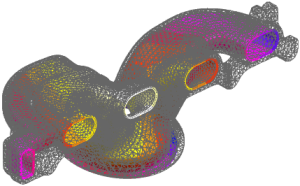
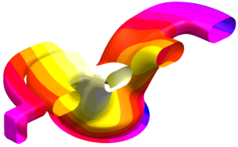

Generate a contour plot of the temperature constraint
You can generate a contour plot of most types of loads and constraints.
 Simulation Navigator
Simulation Navigator
-

 Constraint Container (expand)
Constraint Container (expand)
-
Temp(1)
-
 Plot Contours
Plot Contours -

-
Close
Boundary Condition Contour Plot dialog box
You can edit this post view just as you can edit post views of your solution results.
|
Results |
 Edit Post View (Post Processing group)
Edit Post View (Post Processing group)
-
Edges & Faces
-
Edges (under Primary Display)
None

-
Faces
None
-
OK
Post View dialog box
-

 Return to Model (Context group→Change Window Drop-down list)
Return to Model (Context group→Change Window Drop-down list)